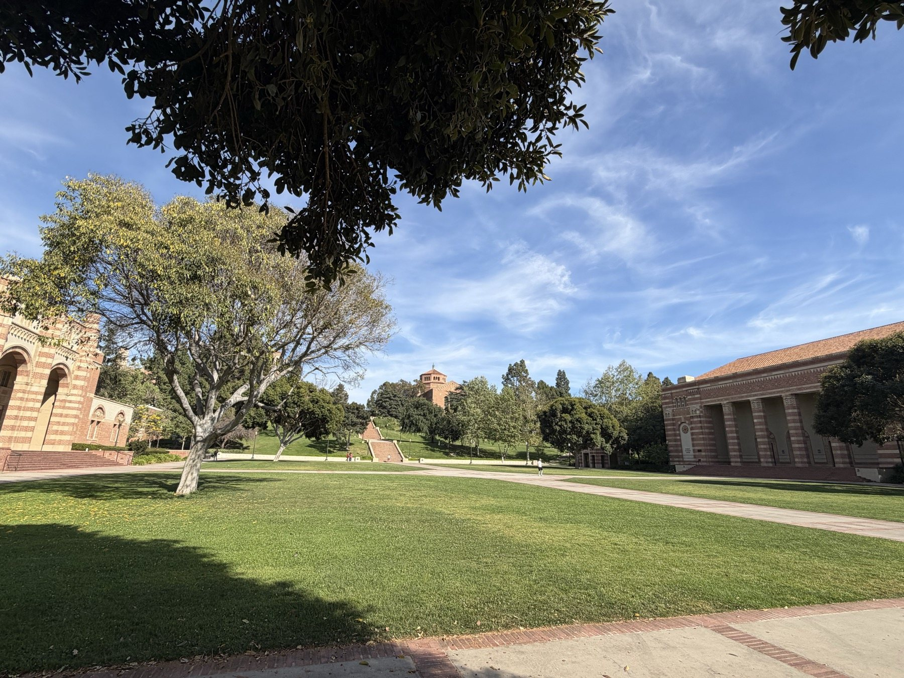

小序
既作《解紅慢》記客加州大學洛杉磯分校訪學之初感，意猶未盡，復取《勝州令》一調，寫其後讀書問學、夜窗自省之懷。洛城晴日，紫楹過雨；羅伊斯外，書樓相望。人在萬里之外，反覺胸中所治之史、所守之志，皆被海風與燈火照得分明。
《勝州令》調見《花草粹編》，《御定詞譜》錄鄭意孃一體，四疊二百十五字：第一疊十一句七仄韻，第二疊十一句六仄韻，第三疊十句五仄韻，第四疊九句四仄韻。譜中又云原詞「用韻太雜，無別首可校」，今依其句數字數為準，略取仄韻相承之意，以續客中問學之篇。
第一疊
紫楹新過雨。晴雲垂樹。
晚鐘初度。
倚廊聽、講筵清響，羅伊斯外深路。
棕陰深處，書樓影轉斜陽暮。
對海氣，贏得襟懷素。
青編堪共語，誰更催歸去。
第二疊
追思此日，共客洛城攜手，暫從萬里羈旅。
到今似、海角雲涯，猶能得見師友。
翻思學事在心，向誰邊細訴。
卻會舊書，淚滴燈前句。
意中山海阻，覺客窗清苦。
第三疊
都是今番悟。
把浮名俗念都掃去。
到此近、數月棲遲，是海闊天遙處。
當初自許，為信史不辭苦。
卻甚夜深，尚與殘編遇。
蘭臺夢何處，肯負青燈否。
第四疊
終待把、雲箋細數，把平生、未了新譜。
問君怎見得，書中天地，自成歸路。
可憐萬里西風，細尋思，
都在心深處。
莫負此行旅。
丙午孟夏，客洛城西郭，訪學 UCLA，續倚《勝州令》。

箋註 · 詞牌與作意
勝州令
紫楹新過雨。晴雲垂樹。
倚廊聽、講筵清響，羅伊斯外深路。
為信史不辭苦。
蘭臺夢何處，肯負青燈否。
問君怎見得，書中天地，自成歸路。
註釋 · 詞語
跋
《解紅慢》較多寫初至 UCLA 的校園感受：山岡、棕庭、書樓、海風，以及遠行後忽然打開的胸襟。《勝州令》則更向內，寫數月之後，客居生活漸成日課，課堂、圖書館、筆記、夜燈一一沉入心中，成為問學之力。
長調之好，在可容迴環。前二疊寫校園與師友，三疊寫自警，末疊寫歸路。所謂「莫負此行旅」，不是要把遠行說得過分壯闊，而是提醒自己：既已來到這裏，便當把看見的世界、讀到的書、受過的啟發，真真切切地帶回自己的研究與寫作裏。